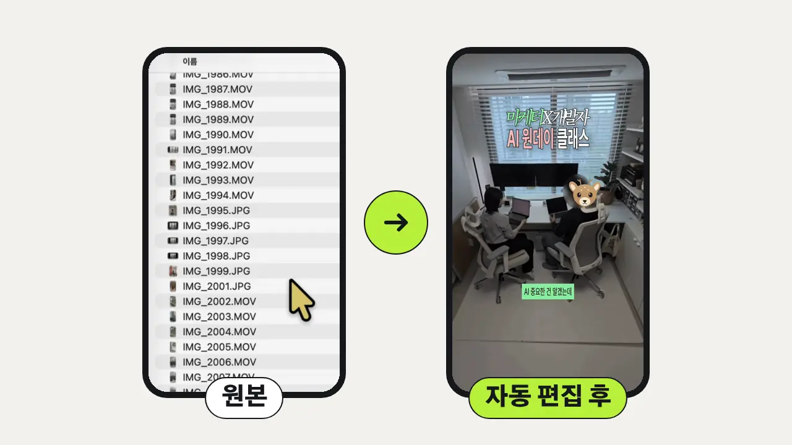
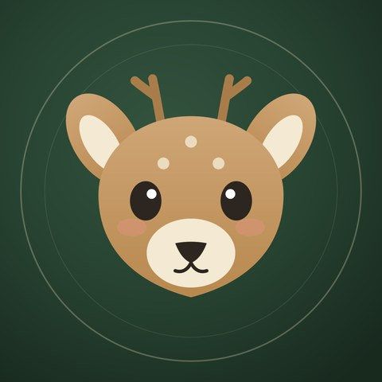

마케터는 사람들이 반응하는 콘텐츠가 무엇인지 압니다.
하지만 그 과정을 매번 직접 반복해야 하죠.
매번 손으로 반복하던 일, AI 직원에게 넘기는 세팅법을 배웁니다. 1인 사업가·프리랜서·소상공인·크리에이터를 위한 하루 수업이고, 마케터와 개발자 강사 두 명이 함께 가르칩니다.

1인 사업자 대부분이 AI를 채팅으로 질문하는 데만 씁니다
파일 정리, 서류 작성, 영상 편집 같은 반복 업무는 여전히 손으로 합니다
걸림돌은 도구 사용법이 아니라, AI에게 일을 시키는 방법입니다
AI가 다 해준다더니
왜 오히려 내가 더 바빠진 것 같죠?
분명 시간을 아끼려고 AI를 쓰기 시작했는데
결과물을 수정하다 보면 몇 시간이 훌쩍 지나갑니다.
그렇다고 AI를 안 쓸 수도 없잖아요.
8년 동안 마케팅 현장에서 콘텐츠를 만들어온 마케터.
그리고 반복되는 업무를 AI로 자동화해 온 개발자.
저희는 각자의 분야에서 일하면서 비슷한 고민을 해왔습니다.
“AI를 쓰는 건 쉬워졌는데
왜 내 일에 제대로 쓰는 건 여전히 어려울까?”
마케터는 사람들이 반응하는 콘텐츠가 무엇인지 압니다.
하지만 그 과정을 매번 직접 반복해야 하죠.
개발자는 복잡한 작업을 자동화할 수 있습니다.
하지만 어떤 콘텐츠가 사람들의 마음을 움직이는지는 마케팅의 영역입니다.
그래서 저희 둘이 만났습니다.
잘 만든 결과물을 더 적은 시간으로 만들 수 없을까?
그 고민을 함께 해결해 보기로 했습니다.
AI 도구를 10개씩 소개하고
프롬프트 몇 개 알려드리는 수업은 이미 많잖아요.
저희는 실제로 일할 때 반복하는 작업들을 줄이고 싶었습니다.
대답하는 AI 말고,
직접 일하는 AI
클로드가 내 컴퓨터에서 직접 파일을 정리하고, 영상을 편집하고, 문서를 씁니다. 하루 동안 이런 AI 직원을 내 업무에 맞게 만듭니다.
물론 AI가 모든 걸
완벽하게 해주지는 않습니다.
그래서 결과물을 확인하고 수정하는 방법까지 함께 알려드리려고 합니다.
AI에게 일을 시키는 법부터
AI가 만든 결과물을 제대로 활용하는 법까지.
이번에는 두 사람이 함께 알려드립니다.
귀찮고 시간이 오래 걸리던 반복 업무를 AI 직원에게 넘깁니다
코딩 없이,
문장으로 일을 시킵니다
명령어 대신, 이 네 가지만 넣어서 말하면 됩니다
AI 강의를 듣고 나면 그때는 다 이해한 것 같죠.
그런데 막상 혼자 해보려면 어디서부터 시작해야 할지 막막합니다.
설치부터 막히기도 하고
분명 똑같이 따라 했는데 결과물이 다르게 나오기도 하니까요.
저희는 그 순간을 그냥 넘기고 싶지 않았습니다.
그래서 딱 10명만
모시기로 했습니다.
여러분이 가져온 업무 자료로 직접 만들어보고
마음에 들지 않으면 그 자리에서 다시 수정해 봅니다.
강사가 잘하는 걸 보여주는 수업보다
수강생이 직접 해낼 수 있는 수업을 만들고 싶었습니다.
오전에 만든 사업 설명서를 하루 종일 모든 실습에 다시 씁니다
일 시키는 문장 공식을 익히고, 내 사업과 말투를 아는 작업실과 업무 매뉴얼을 만듭니다
영상 자동 편집을 세팅하고, 신청할 때 알려 주신 내 반복 업무로 AI 직원을 만듭니다
모든 결과물은 내 컴퓨터에 남아 수업 후에도 계속 씁니다
AI가 쓴 티가
나지 않게 만듭니다
마케터가 정한 기준으로 다듬습니다
50분 수업 + 10분 휴식
5·6교시에는 신청할 때 알려 주신 반복 업무로 나만의 직원을 만듭니다
무엇을 만들지는
수업 전에 미리 정해 둡니다
최대 10명이라 한 분씩 업무를 먼저 살펴봅니다. 현장에서 뭘 만들지 몰라 멈추지 않습니다.
AI가 만든 결과물이 고객에게 통하는지 기준을 잡고, 실제 편집 순서 그대로 영상 편집을 AI에게 시키는 법을 알려 드립니다

AI가 내 컴퓨터에서 직접 일하도록 세팅하고, 기본기부터 내 업무 직원 만들기까지 막히는 지점을 바로 풀어 드립니다
만든 결과물이 실제로 돌아가는지는 개발자가,
고객에게 통하는지는 마케터가 봅니다.
마케터가 “이건 고객이 싫어해요” 하면,
개발자가 그 자리에서 AI 세팅을 고칩니다.
작업실, 업무 매뉴얼, 영상 편집 세팅, AI 직원이 모두 내 컴퓨터에 남습니다. 수업에서 배운 문장 공식으로 다음 업무도 직접 맡깁니다.
신청하기그래서 하루 동안 직접 만들어봅니다.
내 작업실을 만들고
영상 편집을 맡기고
내 업무 직원까지 채용해 보는 거죠.
콘텐츠는 마케터가 봐드리고
자동화는 개발자가 도와드릴게요.
11월 22일에 만나요.
11월 22일(일) · 서울역 라이트온 · 500,000원 → 360,000원 · 정원 10명